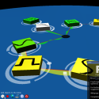
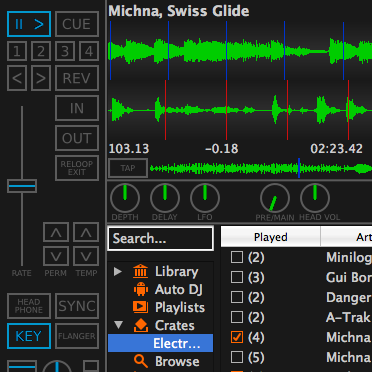
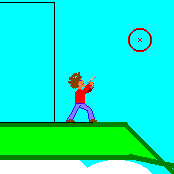
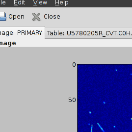
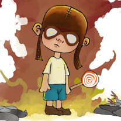
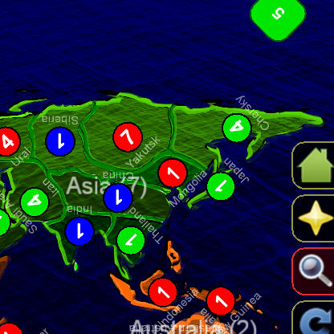
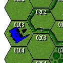
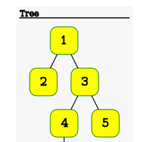
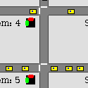

GNU PsychosynthA framework for the development of modular, interactive and collaborative synthesisers targeted at live music performance. It won the Spanish Inter-University Free Software contest in 2008. Written in 2007 onwards. |

MixxxMixxx is a professional DJ software. I am mostly a user, but since 2010 I have made a couple of patches and maintain the JavaScript MIDI mapping for the M-Audio Xponent controller. |
Noxim 3DNoxim 3D is a modification of the Noxim Network-on-Chip simulator to support 3D networks. It can simulate several routing algorithms and the TSV disposition is fully configurable. I wrote it in 2010 in the University of Turku under the supervision of Alexander Yin. |
MPI algorithmsSome algorithms implemented using MPI and C++. Some of them, like branch and bound-based, are implemented generically such that new algorithms require minimal effort in filling the apropiate hooks. Written in 2010 for a university course in parallel programming. |
Yet Another Neural NetworkA program that executes layered neural networks. It uses a pipelined multi-threaded evaluation algorithm that is described in its documentation. Written in 2008 for a university course in computation models. |
PLIS compilerCompiler of my own languge with C-like semantics but maybe shorter syntax. Written in 2007 as part of a course in computer organisation in the University of Granada. |
{kind=link}
{kind=link}
{kind=link}
PC speaker playerThis includes two tools for playing music on the PC speaker: a MS-DOS raw audio file player with filters and FX, and a Linux 2.6 OSS driver that exposes the PC speaker as an audio interface. Developed in 2008 for a course in computer organization. |
Mail CrawlA multi-threaded web crawler that finds email addresses on the web. You may give it a list of root web pages and it will follow links dumping all unique email address it finds. Written in 2007 as part of a course in formal languages in University of Granada. |

LuciferinoIn 2003-2006 I developed this aim-and-shoot sidescroller game engine. It was never fully completed, but its core was reused to later write GNU Jump. |
{kind=link}
{kind=link}
{kind=link}

Advanced Python CourseA course in advanced Python targeted at astrophysics programmers that I held in 2011 at the IAA. It included OO and functional programming, metaprogramming, GTK, library interfacing, TTD, Django and others. |

PigeoncideA game written in 2010 with Alberto Villegas Erce and others in the University of Turku were one is a crazy kill convinced to massively extermine pigeons. The game features cool flockin AI and is looking for a 3D designer. |

Code of GreedA computer based Risk implementation featuring a novel touchable interface. Written in 2010 under the supervision of the TribeFlame game company in the University of Turku. |
Yet Another Auction SystemAn online auction system written in Django for a course on web system development in the University of Turku in 2010. It lacks a proper payment system but features a multi-format REST interface among some other cool features. |
Member ManagerA program for the management of the members of an organisation. Features a GTK UI and multiple database systems support. Written in 2008. |
{kind=link}
{kind=link}
{kind=link}
Cryptographic algorithmsWide collection of cryptographic and modular arithmetic programs written in 2011 for a course in cryptography in the University of Granada. It includes high performant symmetric and asymmetric cryptographic programs, hashes, among other things. |

HMechArtificial intelligence for the Battletech board game, the virtual board where it runs can be downloaded here. It includes a 60 pages document describing its inner algorithms. Written in 2009 for a course in knowledge modelling in the University of Granada. |
{kind=link}
{kind=link}

CVG Moodle plug-insCollection of Moodle plug-ins that were developed as a couple of internships in the University of Granada between 2009 and 2011 to adapt it to our specific needs. They might be useful to some other Computer Science departments. |
¡Mete tu palabra en el diccionario!Automated XSS exploit of the official Spanish dictionary to simulate user given definitions of non existant words. I notified the bug to the dictionary maintainers and it no longer works. |
{kind=link}

Concurrent traffic simulatorA traffic jam simulator. Introduces non-determinism by running each car in a separate thread and the road topology is driven by an extensible framework. Written in 2009 for a course in concurrent programming. |
{kind=link}
{kind=link}
{kind=link}
Artificial vision toolkitAn image processing and artificial vision toolkit with an user interface. It includes several algorithms, including border and corner detection and block matching. Written in 2011 in a course in models of artificial intelligence. |